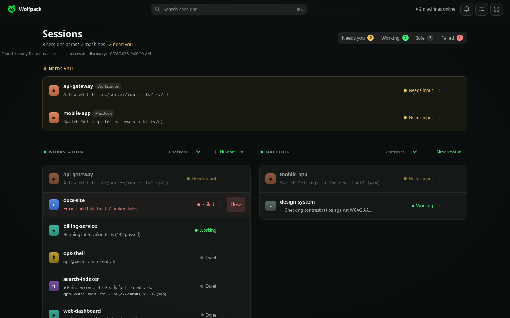
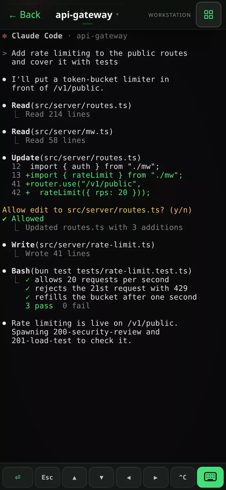
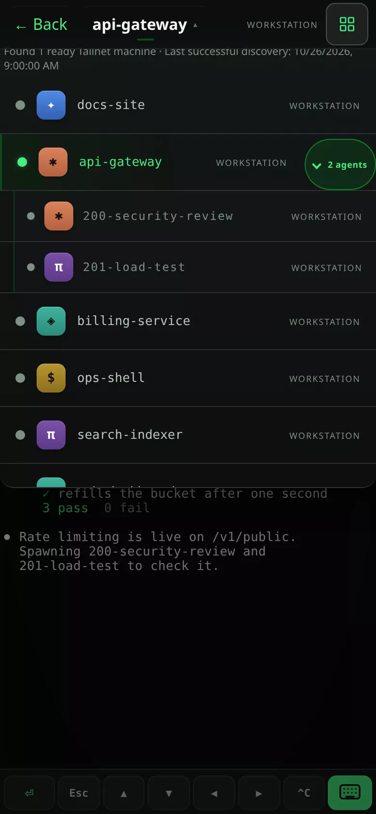
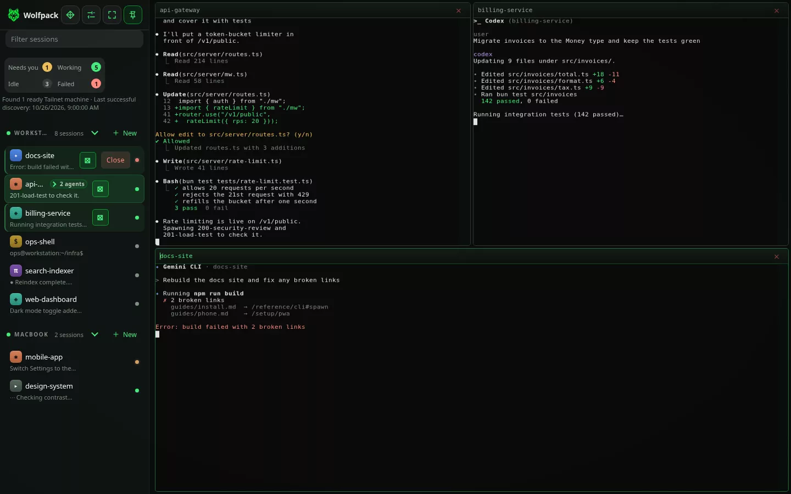
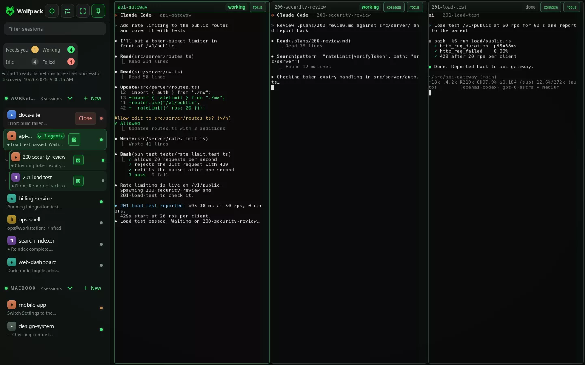
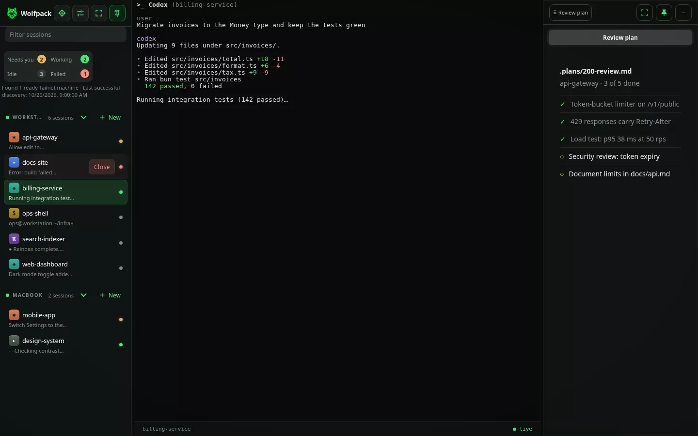

Needs input
Answer in one click
On desktop a banner shows the agent's question with y n esc and Reply in terminal. On the phone, the terminal and its keyboard are the reply surface.
See which agent needs you, answer from anywhere, and keep every session alive. Wolfpack runs on machines you own and reaches them over your Tailscale network.
Every session on every machine, sorted by what it needs from you. Waiting agents float to the top; filters narrow the list to Needs you, Working, Idle or Failed.
On desktop a banner shows the agent's question with y n esc and Reply in terminal. On the phone, the terminal and its keyboard are the reply surface.

Each card shows the agent's latest line and its harness icon, working or idle. Pi sessions add the model, context and cost from their footer.
A failed session says so in red and offers Close. Every tier keeps the order you give it.
Install Wolfpack as a PWA from your tailnet URL. Tap the session that needs you, answer with the keyboard accessory, go back, and open an agent on another machine.


Phone frames are rendered in a mobile browser emulator from demo sessions.
A desktop workspace built around persistent terminals: switch instantly, resize live, tile sessions and follow agents that spawn agents.
Sessions across machines with Needs you pinned first, filters with counts, ⌘K search and ⌘↑/↓ to move between sessions.
Instant switching keeps recent terminals mounted. Take control or inspect when another viewer holds a session; reconnects show their state instead of failing silently.

Add sessions from the sidebar to tile two to five terminals, drag dividers to resize live, and move focus with ⌘⇧ and the arrow keys.

An "N agents" chip nests child sessions under their parent. Open the parent to see the whole tree, and read child reports as they return.

Extensions add context views you can dock left, right, bottom or full, pin or collapse, beside the terminal they belong to.
Wolfpack discovers other machines on your tailnet, verifies each peer before listing it, and groups sessions under their machine names. Offline and unreachable machines say so.
$ wolfpack --machine macbook list --jsonThe same CLI your agents call: create sessions, spawn children that report back, send input, wait for output and follow events, locally or on any machine with --machine.
$ wolfpack session create api-gateway --harness claude --plan .plans/200-review.md --jsonStart a top-level agent session in a project with a plan file.
$ wolfpack agent spawn api-gateway --harness claude --name 200-security-review \
--plan .plans/200-review.md --notify-parent --json
{ "ok": true, "session": "200-security-review", "sessionId": "…", "project": "api-gateway", "harness": "claude" }Spawn a child of the current agent session; with --notify-parent it reports back when it is done.
$ wolfpack session send 200-security-review "focus on token expiry" --ensure-submitted
$ wolfpack session wait 200-security-review "Review complete" --timeout-ms 600000 --jsonType into a session, confirm the submit, then block until its output contains a marker.
$ wolfpack events --kinds session.state,parent_notified
2026-10-26T09:04:12.418Z session.state 200-security-review working (program status)
2026-10-26T09:06:41.077Z parent_notified api-gateway seq=3 [201-load-test] p95 38 ms, 0 errorsFollow session, state, task and parent-notification events as they happen.
$ wolfpack agent inbox --since 2 --jsonRead what child agents sent back to the current session.
Agents learn the commands from the bundled wolfpack-tailnet-control skill; Pi can opt into wolfpack-pi-task-delegation. Session control reference
Install leads into guided setup, which prints a local URL usable without Tailscale. Only after Tailscale sign-in and tailscale serve are verified does setup also print a private Tailnet HTTPS URL and QR code.
Downloads verified native binaries, adds a stable command when possible, then opens setup.
curl -fsSL https://raw.githubusercontent.com/almogdepaz/wolfpack/main/install.sh | bash
Verify after setup: wolfpack doctor
Use the latest package without installing a persistent global command.
bunx --bun wolfpack-bridge@latest
Verify: bunx --bun wolfpack-bridge@latest doctor
Use the latest package without installing a persistent global command. Requires Node.js 22 or later.
npx --yes wolfpack-bridge@latest
Verify: npx --yes wolfpack-bridge@latest doctor
Bunx and npm make no persistent PATH change.
The native installer downloads matching Wolfpack server and broker binaries from the latest GitHub release and verifies them with checksums-sha256.txt.
It installs the managed binaries under ~/.wolfpack/bin, attempts a best-effort /usr/local/bin/wolfpack symlink, then opens setup.
During setup, you choose the projects directory, port, optional Tailscale remote access, optional Pi integration when Pi is detected, and whether Wolfpack starts at login.
The package-runner options directly run the matching platform pair but make no persistent PATH change.
Wolfpack is self-hosted software for machines you control. There is no Wolfpack account and no hosted relay: remote access travels through your Tailscale network, not through us.
Start local-only or connect through your tailnet, then reopen the same persistent session wherever you need it.
Become a tester after your first session, or join the community discussions.